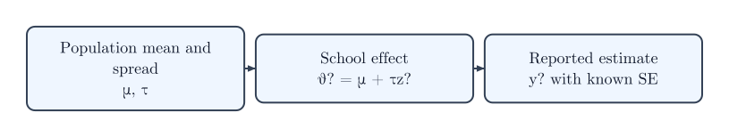
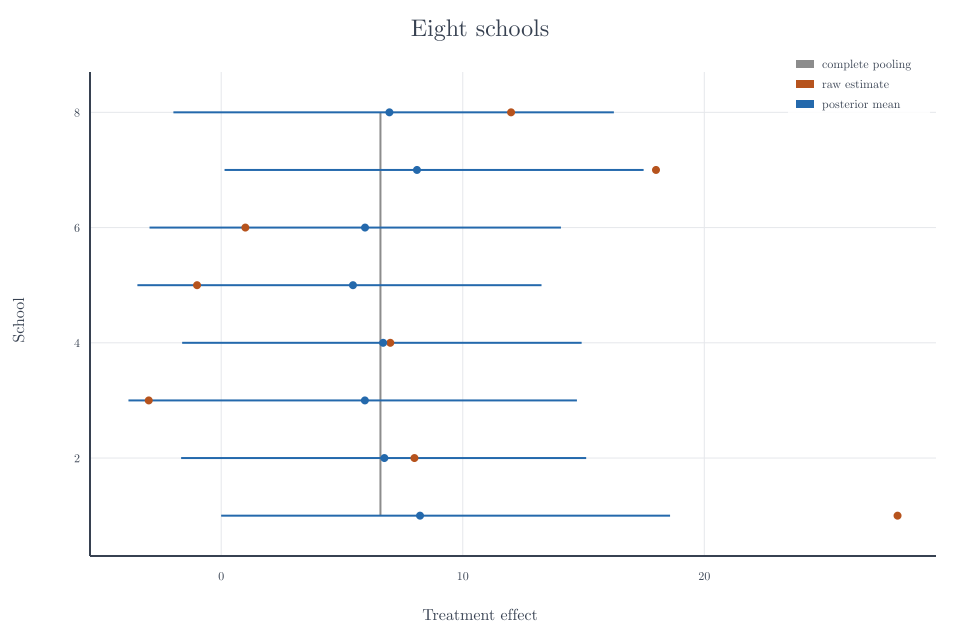

Eight schools and partial pooling
Abstract
Each observation is an estimated treatment effect with a known sampling standard error. School effects are written as μ + τz with independent standard Normal z. The priors are Normal(0, 10) for μ and half-Cauchy(0, 5) for τ. Sampling log τ requires adding log τ to the log density. Separately, hierarchical Normal quadrature integrates out the effects and μ analytically and integrates over τ numerically. The two calculations provide a cross-check. The plot compares posterior school means with the raw estimates and the complete-pooling estimate.
How information moves between schools
#include <dm/dm.hpp>
int main() {
std::filesystem::create_directories("build");
datamunge::graphics::Diagram()
.node("population", {0, 0}, "Population mean and spread\nμ, τ")
.node("effect", {4, 0}, "School effect\nθⱼ = μ + τzⱼ")
.node("observed", {8, 0}, "Reported estimate\nyⱼ with known SE")
.edge("population", "effect")
.edge("effect", "observed")
.save_svg("build/eight_schools_model.svg");
}
Reproducible analysis
#include <dm/dm.hpp>
namespace b = datamunge::bayes;
using datamunge::graphics::RPlot;
int main() {
const std::vector<double> y{28, 8, -3, 7, -1, 1, 18, 12};
const std::vector<double> se{15, 10, 16, 11, 9, 11, 10, 18};
const auto ref = b::hierarchical_normal_posterior(y, se, 0, 10, 5);
const auto pooled = b::normal_mean_posterior(y, se, 0, 10);
b::AutodiffModel model([&](auto&, const auto& q) {
const auto tau = exp(q[1]);
auto lp = b::normal_lpdf(q[0], 0, 10) + b::cauchy_lpdf(tau, 0, 5) + q[1];
for (std::size_t j = 0; j < y.size(); ++j)
lp = lp + b::normal_lpdf(q[j + 2], 0, 1)
+ b::normal_lpdf(y[j], q[0] + tau * q[j + 2], se[j]);
return lp;
});
const auto chains = b::NUTS({.num_samples = 2000, .num_warmup = 1500, .target_accept_rate = 0.97})
.sample_chains(model, std::vector<double>(10, 0), 4);
std::vector<double> school, means, lo, hi;
std::print("| School | Raw effect | Quadrature mean | NUTS mean | 90% interval | Split R-hat | ESS |\n"
"| --- | ---: | ---: | ---: | ---: | ---: | ---: |\n");
for (std::size_t j = 0; j < y.size(); ++j) {
const auto effects = b::chains_of(chains, [j](const auto& q) {
return q[0] + std::exp(q[1]) * q[j + 2];
});
const auto s = b::summarize_draws(effects);
school.push_back(j + 1);
means.push_back(s.mean);
lo.push_back(s.q05);
hi.push_back(s.q95);
std::print("| {} | {:.0f} | {:.2f} | {:.2f} | [{:.2f}, {:.2f}] | {:.3f} | {:.0f} |\n",
j + 1, y[j], ref.theta_mean[j], s.mean, s.q05, s.q95, s.rhat, s.ess);
}
std::println("");
std::size_t divergences = 0;
for (const auto& chain : chains)
divergences += std::accumulate(chain.divergent.begin(), chain.divergent.end(), 0);
std::print("Post-warmup divergences: {}.\n", divergences);
std::filesystem::create_directories("build");
RPlot::create().lines({pooled.mean, pooled.mean}, {1, 8}, "complete pooling", {140, 140, 140})
.segments(lo, school, hi, school, {36, 105, 172}, 2)
.points(y, school, "raw estimate", {182, 83, 29})
.points(means, school, "posterior mean", {36, 105, 172})
.title("Eight schools").x_label("Treatment effect").y_label("School")
.save_svg("build/eight_schools.svg");
}| School | Raw effect | Quadrature mean | NUTS mean | 90% interval | Split R-hat | ESS |
|---|---|---|---|---|---|---|
| 1 | 28 | 8.13 | 8.23 | [-0.00, 18.58] | 1.002 | 1973 |
| 2 | 8 | 6.74 | 6.76 | [-1.66, 15.11] | 1.004 | 1512 |
| 3 | -3 | 5.90 | 5.95 | [-3.84, 14.73] | 1.004 | 1503 |
| 4 | 7 | 6.60 | 6.70 | [-1.62, 14.92] | 1.003 | 1461 |
| 5 | -1 | 5.39 | 5.45 | [-3.47, 13.26] | 1.004 | 1458 |
| 6 | 1 | 5.89 | 5.95 | [-2.97, 14.07] | 1.003 | 1510 |
| 7 | 18 | 8.08 | 8.10 | [0.14, 17.49] | 1.002 | 2059 |
| 8 | 12 | 6.84 | 6.96 | [-1.98, 16.26] | 1.003 | 1715 |
Post-warmup divergences: 0.

Reference
Stan User’s Guide 2.19, section 6.2. See also the eight-schools discussion in Gelman et al., Bayesian Data Analysis, 3rd ed., section 5.5. Stan User’s Guide 2.19 PDF